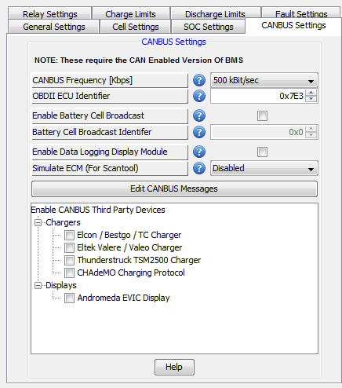

These settings deal with the high speed digitial communication network (called the CANBUS or CAN for short). It is also where the CANBUS message editor is located. The CANBUS message editor allows for the user to customize how the BMS transmit data on the CANBUS interfaces.
The third party devices table allows the user to easily enable or disable support for specific third party devices controlled over CANBUS. The device manager will automatically add or remove CANBUS messages based on which devices are enabled.
To Enable or Disable CANBUS support for a third party device, simply click the checkbox in front of the device name on the list.
Associated Parameters:
| < Nominal Cell Resistance | CANBUS Frequency > |